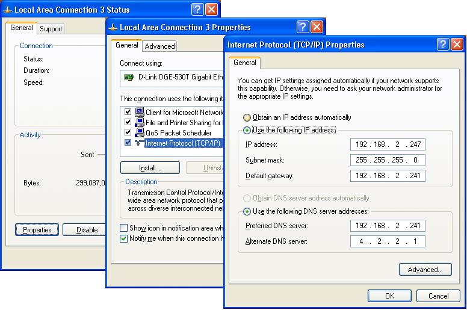

Workstation Control Panels¶
Windows XP Control Panels¶
Control Panel ‣ Network Connections¶
Use the Network Connections panel to view and change IP settings. Workstations should be set to obtain IP and DNS automatically (through DHCP).
- Right-click your Local Area Connection icon, and choose Properties.
- Click on Internet Protocol (TCP/IP) to highlight it.
- Click the Properties button.
- Click the radio buttons Obtain an IP address automatically and Obtain DNS server address automatically.
Control Panel ‣ User Accounts¶
The User Accounts panel will view or change user full names and change passwords. Actual user names are not shown in this panel and cannot be changed here, which makes this panel less than useful.
Control Panel ‣ System ‣ Computer Name¶
Use the Computer Name tab on the System control panel to view and change the computer name and the Workgroup or Domain settings. After changing values here, the computer must be restarted. This panel may also be displayed by right-clicking My Computer and choosing Properties.
My Computer ‣ Manage ‣ Users and Groups¶
Right-click My Computer and choose Manage from the options menu to see the system management panel. Here one can view and set a variety of system properties, including full user and group management. When a user account name is changed, the computer must be restarted.
My Computer ‣ Map Network Drive¶
Right-click My Computer and choose Map Network Drive from the options menu to use the drive letter mapping utility.
Start ‣ Run ‣ CONTROL USERPASSWORDS2¶
In the Run dialog, type in “CONTROL USERPASSWORDS2” and press <Enter> to display the Windows 2000 user account management control. Here one can view user account names and change the accounts. Changing an account name removes any user shares within the user documents. An account change does not change the home directory name for the user.
Mac OS X System Preferences¶
System Preferences ‣ Accounts¶
Use the Accounts preference pane to view or change user account information for the workstation. Full names, account names, and passwords can all be managed here.
System Preferences ‣ Network¶
User the Network preference pane to view and change IP settings for the network interfaces of the local workstation. Workstations should be set to use DHCP.
- Click the network connection to manage from the interface list. (i.e. Ethernet or Airport)
- Set Configure IPv4 to Using DHCP
- Click Apply
System Preferences ‣ Sharing¶
Use the Sharing preference pane to view and change the computer name and shared services of the local workstation.